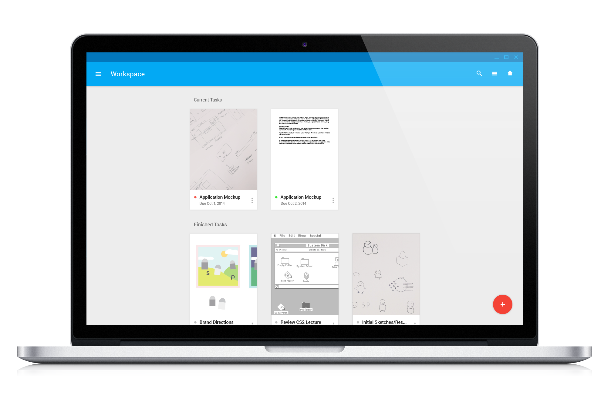

I took the opportunity to design a informative landing page as well, introducing the museum as an introduction to the neighboring Great Smoky Mountains and drawing attention to its core values. The subtle use of circular and rectangular elements alludes to the logo.



My process was very long winded. Initially, I researched the museum, related topics about salt and pepper, and even the eccentric shakers on display. I explored topics and conceptualized ideas about contrast, pairing, play, overlap and dependency. Below are a just a couple of my initial sketches.